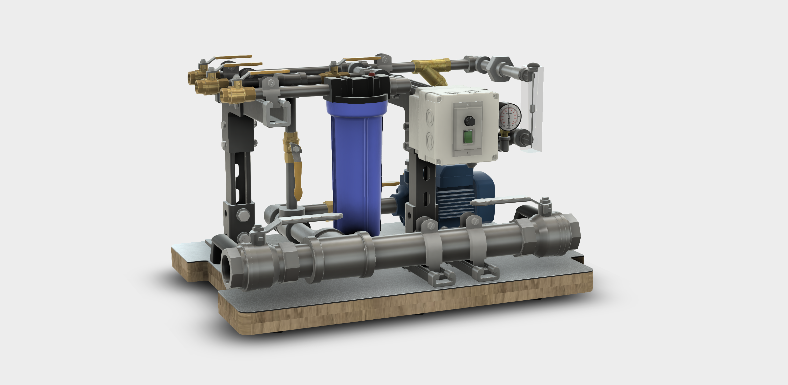
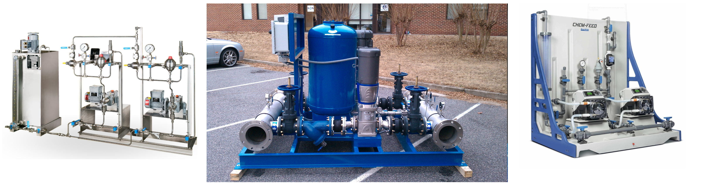
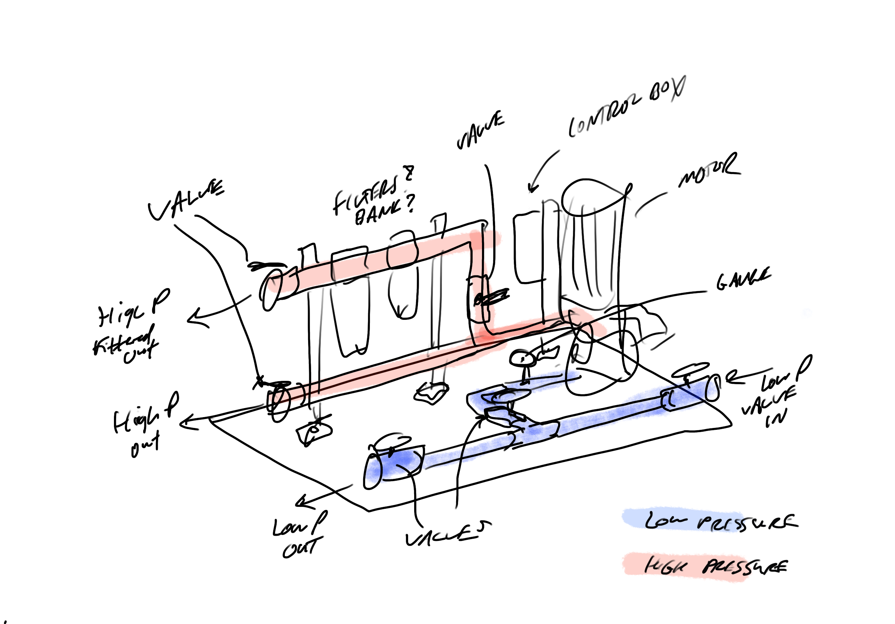
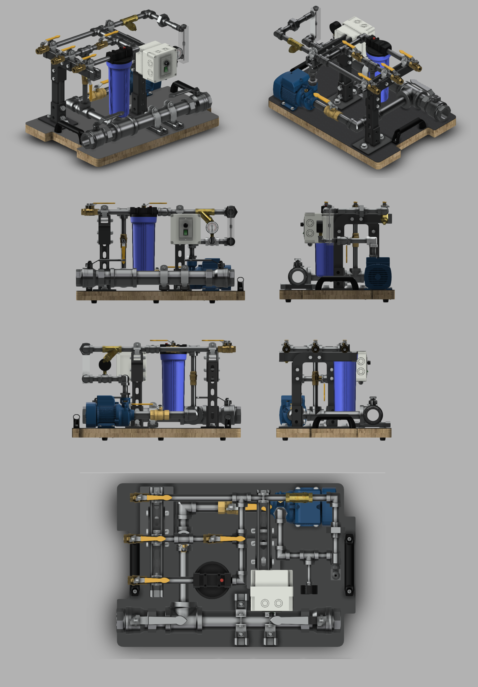
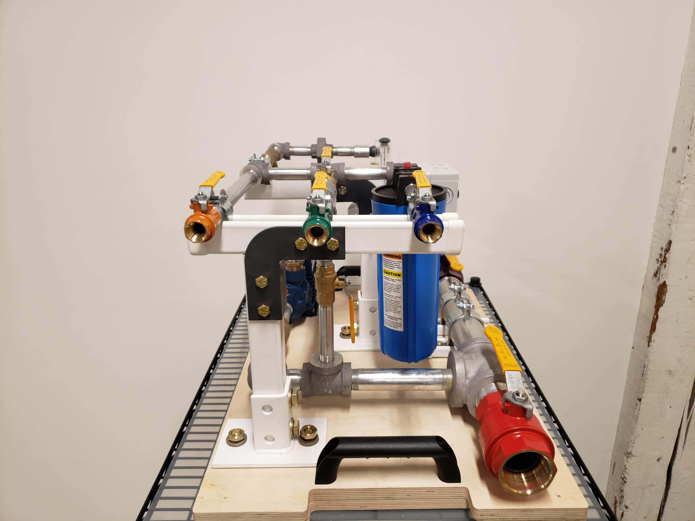
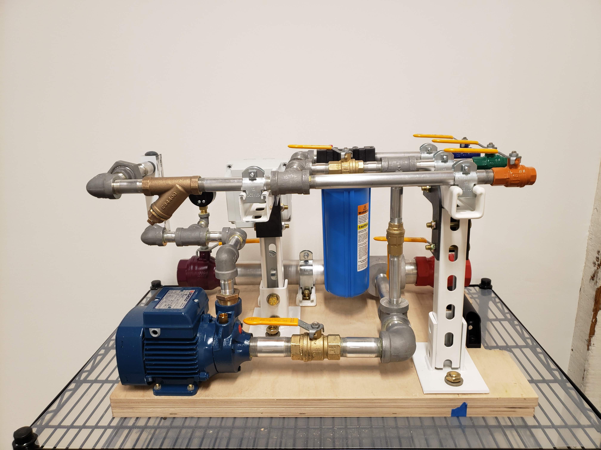
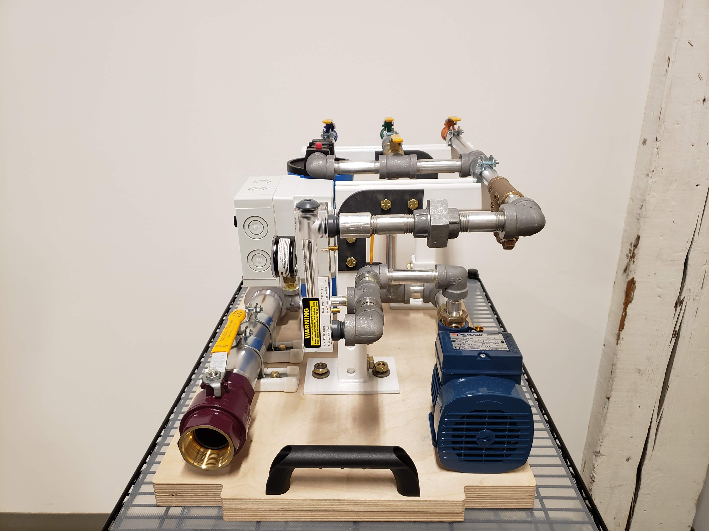

A modular engineering skid is a process system (think a pump, filter, regulator, or any other supcomponent of an engineering system) that is contained in a frame which allows it to be easily transported and attached to any pre-existing components. This modularity allows for systems to be hot-swapped and standardized among different locations. As such, skids have become popular in the engineering world, with many companies profitting greatly off of their growing hype. Realizing this, a client tasked our team at Facture Product Development to create a custom realistic engineering skid to pair it with augmented reality (AR). This AR demo would show the step by step process of maintaining, installing, and replacing parts on the skid in order to highlight the potential of AR in industrial solutions. On this project, I was the lead mechanical engineer, responsible for choosing components, creating the full CAD assembly, and supporting the build process.
Since our team had limited knowledge on engineering skids, our first task was to delve deep into skid designs and functions. One of the more common skid usages were pumps and pump accessories, for use with oil, chemicals, or water. Apart from the pump itself, these skids usually had multiple inlets and outlets such that they can be connected in series or parallel, gauges to indicate pressure, flow rate, etc., in line filters to catch debris, and control valves to choose which of these additional components are utilized. Below are three of the pumps that we drew most inspiration from in choosing what to include on our own skid.
Following this research, we then had to consider which of these components could be best demonstrated in an Augmented Reality environment. This was judged by their necessity for a tool and complexity of the action itself. As such, we decided to build a high pressure pump, taking a large diameter input and funneling into a smaller diameter output, as to have more distinguished valves and diversity of piping and fittings. To this assembly we added an in-line Y filter, a larger T filter, a pressure gauge, a flowmeter, a variable frequency drive (VFD), and multiple valves for controlling the flow. With these elements in mind, we created a sketch to kickstart the CAD process.
A password protected 3D model can be found here (contact me for access).


